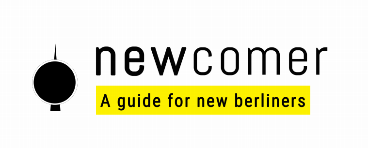

Taxes

Tax ID
The Steuer ID is your personal identification number. It is only issued once and is unique to you. This is your personal tax ID number for the rest of your life and is given to you when you register.
This number will be used to identify you by the Tax Office (Finanzamt). You must include your Steuer ID on all letters to the Finanzamt and is used by them to process everything regarding Einkommensteuer (Income Tax).
It is created randomly and doesn’t give away any personal information. You’ll get this number once you register (or Anmeldung) in Germany. This simple process involves registering yourself as living at a specific address in Germany.
Once you register at your local registration office, you will be given an Anmeldungbescheinigung (registration certificate).
Every German citizen or newcomer in Germany is required to register within 14 days after moving to a new house or flat.
The Central Tax Office in Germany will normally send your tax ID automatically to your registered address within a few weeks after you’ve registered at the registration office.
Keywords: Tax ID, Steur ID, Einkommensteur, Finanzamt, Anmeldung, Anmeldungbescheinigung
Church tax
In Germany, churches can collect taxes from their members. This is called the church tax (Kirchensteuer).
The church tax is 8% of your income tax (Einkommensteuer) is 9% in Berlin. If you earn 50 000€ a year in Berlin, you would pay around 800€ in church tax.
The religious communities collecting a church tax are:
The Evangelical Church (Evangelische Kirche)
The Roman Catholic Church (Römisch-katholische Kirche)
The Jewish Community (Jüdische Gemeinde)
The Old Catholic Church (Altkatholische Kirche)
Various Free Religious communities (Freireligiöse Gemeinden)
If you are not a member of a church that collects church tax, you do not have to pay the church tax. If you are, the only way to stop paying the church tax is to leave the church. You declare your religion during your Anmeldung. If you were baptized in your home country, the church can tax you even if you registered as an atheist.
Keywords: Church Tax, Kirchnersteuer, Finanzamt, Anmeldung, Einkommensteuer
Radio TV and tax
Every three months, you will get a 52.50€ bill from Rundfunk ARD, ZDF und Deutschlandradio. This is the TV tax. It's also called the GEZ or Rundfunkbeitrag. Every household in Germany must pay it.
Each household has to pay 17.50€ per month. If you live with other people, you only have to pay the TV once. It doesn't matter if you live by yourself or if you share a flat with 25 other people; the monthly amount stays the same.
If someone in your household is already paying, you can inform the GEZ by filling this form.
Some people can pay less, or do not have to pay anything:
Students and trainees (Azubis)
Hartz IV recipients
Retirees who receive social assistance
People with disabilities - the fee is reduced to 5.83€/month for those with RF in their disabled person's pass
Residents of nursing homes
Asylum seekers
For each group, there are specific conditions to avoid the fee. For example, students only pay less if they receive BAföG (financial aid) and they do not live with their parents.
To get a Rundfunkbeitrag reduction or exemption, fill this form: https://www.rundfunkbeitrag.de/buergerinnen_und_buerger/formulare/befreiung_oder_ermaessigung_beantragen/index_ger.html
Important: Do not ignore GEZ letters! If you don't pay, it will get more expensive. They will not leave you alone. They will send a collection agency. If you don't pay, it can also affect your Schufa score.
For each group, there are specific conditions to avoid the fee1. For example, if you are a student, it's not enough to study; you must also be a BAföG (financial aid) recipient and must not live with your parents.
Keywords: GEZ, Rundfunkbeitrag, TV tax, Schufa, BAföG, Hartz IV, Azubis
Steuernummer
To start to work as a freelancer, a Steuernummer is obligatory, and you need to apply for it at your local Finanzamt (tax office). You can’t do your taxes or invoice your clients without it.
This document states your circumstances such as marital status, number of kids or religion. It holds your profile as a taxpayer that’s linked to your tax number (Tax ID).
If you move to a different city or city district or change from employee to self-employed, this number can change.
You only really need to use this if you start freelancing.
If you’re self-employed, your Steuernummer will be used in numerous cases, whenever communicating with the tax authorities (the Finanzamt); paying your VAT for the month, paying your local trade tax, or income tax. You also use it to do a Germany tax return.
If you have income from employment only, you can submit your first tax declaration without a tax number. The tax office will then automatically issue one for you and inform you about this. You should use this tax number in the following years unless your situation changes (moving to another address, change in marital status, having income from other sources, etc).
Exceptions about freelancing holindg certains visa conditions.
Keywords: Steuernummer, Umsatzsteuer-identifikationnummer, Finanzamt, Freelance, Freiberufler, Selbstandiger, Tax Return, Tax Declaration, Tax ID, Steuer ID.